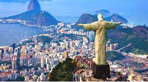
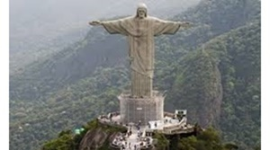
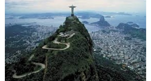
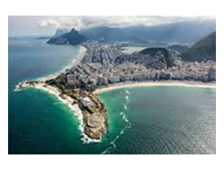
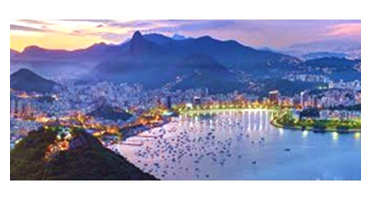
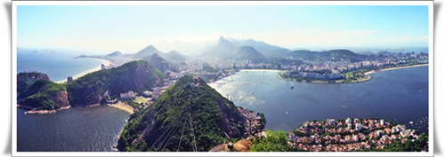

| Breathtaking Places around Rio! | ||
1. Christ the Reedemer  Now who doesn’t know about this marvelous creation of mankind! It stands with the amazingly lively city of Rio in its braces. A symbol of Christianity across the world, the statue has also become a cultural icon of both Rio de Janeiro and Brazil, and is listed as one of the New Seven Wonders of the World. |
||
|
2. Copacabana   You’ve seen this place a million times in various movies and you’ve wanted to be here! Copacabana is a Bairro (neighbourhood) located in the South Zone of the city of Rio de Janeiro, Brazil. It is known for its 4 km (2.5 miles) balneario beach, which is one of the most famous in the world. |
||
|
||
3. Sugarloaf Mountain  Sugarloaf Mountain is a peak situated in Rio de Janeiro. Rising 396 m above the harbor, its name goes after the traditional shape of concentrated refined loaf sugar.This became part of a World Heritage Site declared by UNESCO in 2012.   
| | |